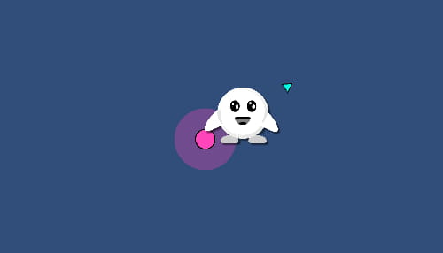
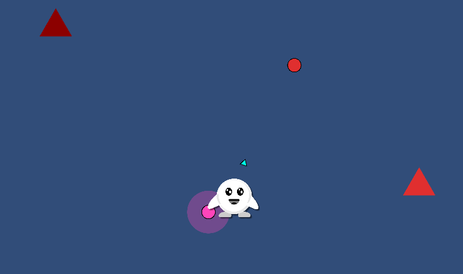
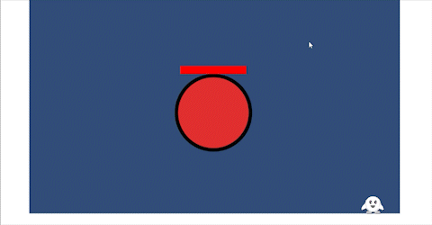

| Capstone Progress Week 5 |
What a week! Our goal was to have a simple prototype of our game to show off the main mechanics of the game.
It’s safe to say what we accomplished was a little more than simple.
I started off the week working on the parry mechanic.
If you time your spacebar input near a pink object, you enter a parry state for 2 seconds.
An arrow pointing towards your mouse cursor appears to indicate the launch direction of the player when you let go.
Implementing the arrow took a lot more time than it should have since I was overthinking the way the arrow should rotate around the player.
I added an invisible pivot point onto the player, made it rotate based off the cursor position, and attached the arrow sprite to it.

Will and I worked together a lot this week since I was mainly focused on combat mechanics and he was working on enemy AI.
We mainly acted as rubber duckies, bouncing ideas off of each other if we ran into any issues or wanted to implement something.
We ended up with 4 types of enemies for the prototype: flying melee, ground melee, air turrets, and ground turrets.
Initially we wanted the ranged enemies to shoot objects that can be launched off; however, the player was still able to be damaged by these bullets after parrying them.
Until I find a proper fix for this, the bullets act as objects to be avoided.

Outside of programming, I acted as the main communicator between the mentors and group members.
We had our first meeting with the mentors, and I think it went well.
I booked a room in our school’s library so we could all meet in person.
The meeting started off slow but after introducing ourselves, I showed the project we had at the time, and described our plans for the final product.
They seemed to really like the idea! They also said we were doing a good job by keeping the scope small, as this allowed for a more polished product, instead of a broken and bloated one.
Now back to development side of the project. I implemented the combo tracker to our game manager. This allowed us to check if the player hit enough objects in a row to damage enemies. I also added some effects to the combat mechanics such as screen shake when damaged, freeze frames when destroying enemies, and some outlines to important objects. We had a meeting over the weekend to go over what was left to implement for the prototype and to make sure everyone was up to speed with the project. All that was left was the HUD implementation and some tweaks to the boss AI.  I’m really happy with what we accomplished and it’s cool to see all the work that everyone has been doing come together into one project. I’m excited to keep working on the project and look forward to seeing our final product. |
|---|